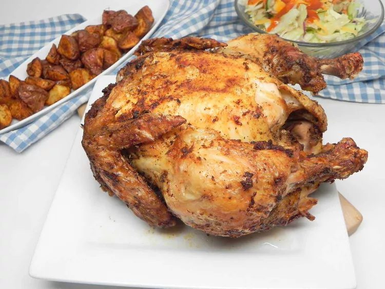

Chicken

Information
Prep Time: 10 mins
Fry Time: 1 hrs 5 mins
Rest Time: 10 mins
Total Time: 1 hrs 25 mins
Servings: 8
Ingredients
- 2 tablespoons olive oil
- 2 1/2 teaspoons Italian seasoning
- 2 1/2 teaspoons poultry seasoning
- 2 teaspoons paprika
- 2 teaspoons salt
- 1 (5 pound) whole chicken, giblets removed
Directions
- Preheat an air fryer to 360 degrees F (180 degrees C) according to the manufacturer's instructions.
- Whisk olive oil, Italian seasoning, poultry seasoning, paprika, and salt together in a small bowl.
- Pat chicken dry using paper towels. Brush spice mixture over entire chicken, including underneath the wings.
- Place chicken in the basket of the air fryer break side down; cook, undisturbed, for 45 mins. Carefully
flip the chicken over using tongs; cook until an instant-read thermometer reads 165 degrees F (74 degrees C),
about 20 mins. Remove chicken to a cutting board; let rest for 10 minutes.